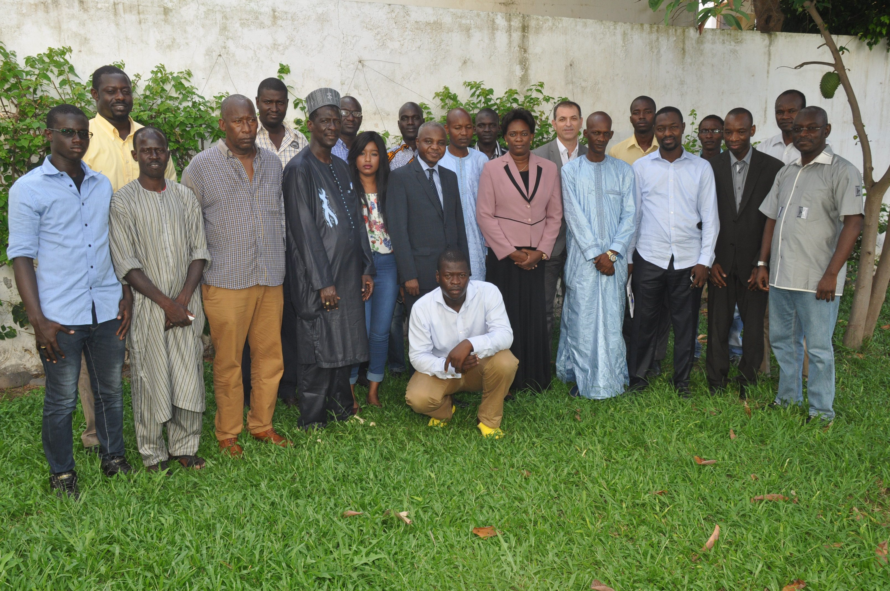
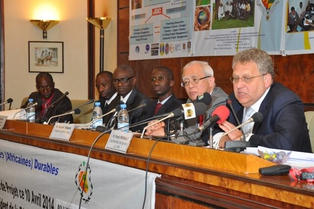

Objectifs du programme
L’objectif principal programmes mastères est de favoriser le développement dynamique des compétences managériales et entrepreneuriales
des participants, afin de leur permettre d’élargir leur expertise, et d’exercer
des fonctions de management et de leadership dans la conduite de projets
complexes, en environnement multiculturel et international. Et surtout de
permettre aux participant(e)s d’améliorer et de consolider leurs compétences
en gestion de projets, programmes et portefeuilles, de faire évoluer leur
carrière, d’élargir leur périmètre d’activité et surtout d’acquérir la boîte
à outils indispensable en gestion stratégique de projets.
Programme de Masters
- Master en Management de Projets;
- Master en Finance d'Entreprises;
- Master en Contrôle de gestion;
- Master en logistique et Supply Chain Management;
- Master en Finance Islamique;
- Master en Finance de Marchés;
Aptitudes Pratiques
- Comprendre l’environnement économique, social, politique et des affaires
ainsi que ses impacts sur les projets, programmes et portefeuille
de projets;
- Comprendre, appliquer, mettre en pratique les principes et techniques
de management de projets, programmes et portefeuille de projets ;
- Travailler en prenant en compte les contraintes de l’entreprise,
de l’organisation, de la production, et technologiques
- Identifir les options et utiliser les circonstances et opportunités
pour créer de la valeur; évaluer l’impact de la stratégie de gestion
des projets, programmes et du portefeuille de projets sur la stratégie
de l’organisation ;
- Évaluer les projets, programmes terminés ou le portefeuille de projet
et /ou les opérations existantes et s’assurer que les informations
concernant les retours d’expérience sont disponibles pour l’amélioration
des projets, programmes à venir et du portefeuille de projets.

Les Résultats attendus
A l’issue d’un programme de Master, les participants et étudiants doivent avoir développés des résultats d’apprentissages
génériques et spécifiques, ainsi que des compétences clés.
Il est attendu que les étudiants ont:
- Acquis une connaissance approfondie des enjeux actuels dans le domaine
d’étude ;
- Développés des compétences avancées, et la compréhension de l’utilisation
contextuelle des concepts, théories, méthodologies et outils ;
- Acquis une bonne pratique de la réflxion, une intelligence des situations,
et un esprit critique et constructif.
- Développés une compréhension approfondie et systématique dans le domaine
spécialisé et peut travailler avec les connais

Pourquoi choisir ce programme
- Il est prévu 2 programmes à temps partiel (12 ou 24 mois);
- Structure de programme complète et flexible;
- Développement personnel et professionnel : Équipe Interculturelle et
atelier de compétences Sociales;
- Faculté internationale apportant des connaissances d'avant-garde ainsi
qu’une perspective multiculturelle;
- Ateliers internationaux.
Afin d’avoir un niveau académique et professionnel élevé, ce programme inclut la préparation aux principales certifications
Professionnelles de gestion de projet.
Métiers et Débouchés
Cette formation débouche sur des postes de cadres et responsables dans les entreprises privées et publiques.
On peut citer à titre d’exemples:
- Directeur ou Chef de Projet dans tous les secteurs d’activité;
- Ingénieur d’affaires;
- Contrôleur de gestion industriel;
- Ingénieur d'estimation;
- Planifiateur;
- Responsable suivi et évaluation;
- Responsable systèmes d’information;
- Acheteur Projet;
- Consultant;